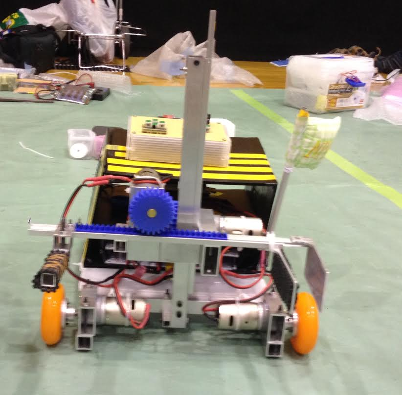

SCIENCE CLUB
交流ロボコンに参加してきました！
2014年3月17日から20日まで東京へ交流ロボコンに参加しに行ってきました。
今年のテーマは「じぇじぇじぇんが」でした。じぇんがじぇんがしてきました。
結果は仙台高専Bチームと東京高専AチームのNPBeeが優勝、仙台高専Aチームと
茨城高専Iチームのsenibara a.iが準優勝しました。また、senibara a.iは
ロボコン大賞もとりました。喜ばしいです。

記事を書いている私はAチームなんですが、競技の途中モタドラが一個しか動作しなく
なってしまうトラブルが起きてしまい、一時正常に動かなくなってしまいました。
ハラハラしましたがメンバーで協力してトラブルシューティングをしてなんとか競技
を続けることができました！(壊れた時の動画はアップロードしていません)
以下にYoutubeに投稿した動画を貼っておきます。